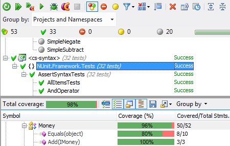

An open source project from Migrii / @alex_seville, @dervalp, @flrent
Blanket.js is NOT production ready.
It is beyond the proof-of-concept stage, but is still NOT stable.
Use at your own risk.
Code coverage is a form of testing designed to identify areas of code that have not been covered by tests.
Here's an example from NUnit:

NCover.Reporting.exe ... let you specify a minimum acceptable coverage for your project or for any part of it. If an element's coverage is below that minimum acceptable coverage percentage, NCover.Reporting.exe will ... make your build fail.-NCover V3 Docs.
module.exports = process.env.EXPRESS_COV
? require('./lib-cov/express')
: require('./lib/express');
Usage in a browser-Instanbul API Docs.
Load esprima.js, escodegen.js and instrumenter.js (this file) using script tags or other means.
...
Aside from demonstration purposes, it is unclear why you would want to instrument code in a browser.
In the browser, we bundle a copy of requirejs and use a modified version of requirejs.load. We load the script file and pass the raw source to our instrumenting function.
requirejs.load = function (context, moduleName, url) {
...
requirejs.cget(url, function (content) {
blanket.instrument({
inputFile: content,
inputFileName: url
},function(instrumented){
blanketEval(instrumented);
context.completeLoad(moduleName);
}
});
});
};In NodeJS, we use require.extensions['.js'] to instrument all the source files as they are processed.
require.extensions['.js'] = function(module, filename) {
if (filename.indexOf(subdir) > -1){
var content = fs.readFileSync(filename, 'utf8');
var dirname = path.dirname(filename);
exports.blanket.instrument({
inputFile: content,
inputFileName: filename
},function(instrumented){
return eval(instrumented);
});
}else{
oldLoader(module,filename);
}
};We've bundled a copy of the Esprima JavaScript parser to generate parse trees for the source files, and a copy node-falafel to modify the parse trees.
Esprima is a high performance, standard-compliant ECMAScript parser written in ECMAScript-Esprima.org
...
sensible syntax tree format, compatible with Mozilla Parser AST
// Life, Universe, and Everything
var answer = 6 * 7;
{ "type": "Program",
"body": [{
"type": "VariableDeclaration",
"declarations": [{
"type": "VariableDeclarator",
"id": {
"type": "Identifier",
"name": "answer"
},
"init": {
"type": "BinaryExpression",
"operator": "*",
"left": {
"type": "Literal",
"value": 6,
"raw": "6"
},
"right": {
"type": "Literal",
"value": 7,
"raw": "7"
}
}
}],
"kind": "var"
}]
}A lightweight node library to modify the parse tree.
var src = '(' + function () {
var xs = [ 1, 2, [ 3, 4 ] ];
var ys = [ 5, 6 ];
console.dir([ xs, ys ]);
} + ')()';
var output = falafel(src, function (node) {
if (node.type === 'ArrayExpression') {
node.update('fn(' + node.source() + ')');
}
});
console.log(output);
(function () {
var xs = fn([ 1, 2, fn([ 3, 4 ]) ]);
var ys = fn([ 5, 6 ]);
console.dir(fn([ xs, ys ]));
})()
blanket = {
instrument: function(config, next){
var inFile = config.inputFile;
instrumented = falafel(inFile,{loc:true}, checkForOneLiner);
next(instrumented)
};
var checkForOneLiner = function (node) {
if (linesToAddTracking.indexOf(node.type) > -1){
node.update(
"_$blanket['"+inFileName+"']["+node.loc.start.line+"]++;\n"
+node.source());
}
};
/* which creates the following: */
_$blanket['test.js'][2]++;
We store all the coverage details in a global variable _$blanket.
When the test runner is finished we pass that variable to the appropriate reporter
We wrote code to append the data from the coverage variable onto the end of the test runner file.
We assign _$blanket to _$jscoverage and then use the built-in mocha reporters to output to json or HTML.
This example can be seen on the Blanket.js website. We took the unit tests for Addy Osmani's Backbone Koans and added Blanket.js to the testrunner.
<script src="js/ext/qunit.js"></script>
...
<script src="js/koans/aboutEvents.js"></script>
<script src="js/koans/aboutModels.js"></script>
<script src="js/koans/aboutCollections.js"></script>
<script src="js/koans/aboutViews.js"></script>
<script src="js/koans/aboutApps.js"></script>
...
</head><body>
<h1>Backbone Koans</h1>
<h1 id="qunit-header">QUnit Test Suite</h1>
...
<script src="js/ext/qunit.js"></script>
<script src="blanket.js"></script>
...
<script src="js/koans/aboutEvents.js" data-cover></script>
<script src="js/koans/aboutModels.js" data-cover></script>
<script src="js/koans/aboutCollections.js" data-cover></script>
<script src="js/koans/aboutViews.js" data-cover></script>
<script src="js/koans/aboutApps.js" data-cover></script>
...
</head><body>
<h1>Backbone Koans</h1>
<h1 id="qunit-header">QUnit Test Suite</h1>
...Ok, here it is: Blanket.js Demo.
I don't have one prepared yet, but this is what you need to do to run it with Node.
npm install blanketrequire("blanket")("/src/");mocha -R html-cov > coverage.html